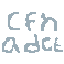

About Me


I am a back-end developer with a passion to learn new things. I've worked on different types of project ranging from AI to Games and Back-end APIs. Due to my experience from past projects that uses a low-level programming language such as C++ and other projects that require a complex algorithm such as games, I am more aware of the app performance in terms of speed and memory usage and able to try to optimize it. In addition to my technical skills and experience. I am also eager to learn new technologies and trends from different computer science field such as Deep Learning, Game Development, Graphics Programming and Web Development, I am committed to stay at forefront of the industry and applying my knowledge in a new and exciting ways.